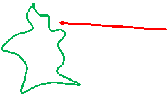
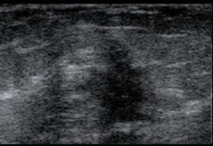

醫學影像處理
作業一 Segmentation
作業說明
讀取提供的影像檔out_112.bmp，此圖檔中間由綠色曲線圈起來的區域為一個tumor，請使用所了解的切割方法對其作切割，可試著搜尋MeVisLab中所提供的切割方法範例。
tumor

報告需要說明為何選用此切割方法及方法的工作原理，亦可與多個切割方法比較，及在此作業中的心得
繳交方式
請將MeVisLab檔(*.mlab)及心得報告(word)壓縮並繳交至課程ftp中HW目錄中
檔案命名格式請壓縮成
學號_HW.rar
user: mip
password: mip
也可利用網頁直接上傳
http://cad.csie.ntu.edu.tw:7000/
user: mip
password: mip